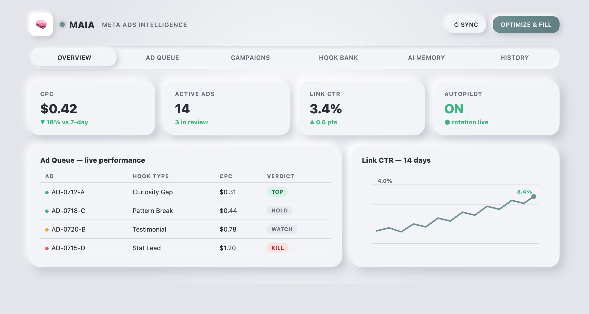
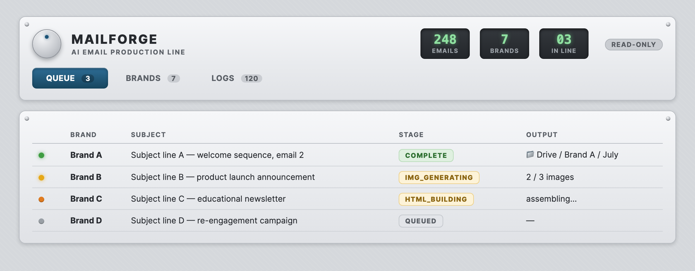
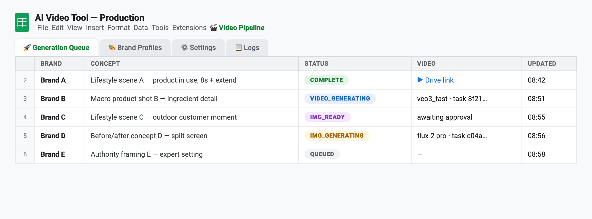
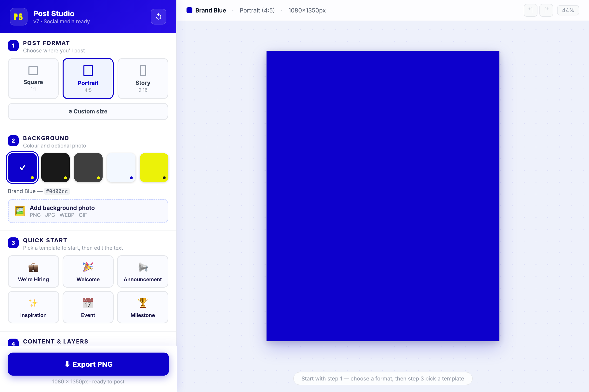

Ten weeks. Seven tools. No engineers hired.
Ieva, with Claude Code. Every tool here shares one architecture: a Google Sheet as the interface, Apps Script as the engine, Claude and AI image / video generation as the creative department. This page is the whole portfolio — about 23,000 lines of working code, written between May and July.
MAIA runs the ads desk
It researches real buyers, writes hooks, generates images and video, publishes to Meta — then pauses losers, promotes winners, and turns every policy rejection into a standing rule. About six weeks and 16,400 lines. Live and autonomous, steering on low cost per click and high link CTR.

MailForge turns a brief into a finished email
A copy brief goes into a sheet row; a finished, on-brand HTML email lands in Drive. Two weeks to build, in production for every brand, and three to four design hours saved per email.

The video tool animates its own stills
Claude designs a frame, checks it with vision, and Veo 3.1 brings it to life. Two weeks, 1,700 lines; it replaces $100–500 stock clips with a few dollars of rendering.

SOT is the quiet multiplier
One spreadsheet auto-syncs brand documents into AI-ready brandbooks that every other tool consumes. A week of work that means no tool hardcodes a brand fact, and onboarding a new brand takes minutes.
The fast ones
A Sheets-to-Figma plugin tags catalogue prices in one click — 37 of 37 verified on the last run. The social post generator, the very first build back in May, is now at version seven. Behind everything sits a shared safety harness — spend caps, kill switches — and a small Vercel rendering service.

The scoreboard
| Tool | Built in | Status | Value, estimated |
|---|---|---|---|
| MAIA | 6 weeks | Live, autonomous | $2,000–6,000/mo creative replaced |
| MailForge | 2 weeks | Production | 3–4 hrs saved per email |
| Video tool | 2 weeks | Operational | $100–500 per clip |
| SOT | 1 week | Feeds all tools | Cross-tool multiplier |
| Price sync | Days | Verified | Hours per catalogue |
| Social gen | Days | In use | Proof of concept |
Each one got cheaper to build
Every tool left reusable parts behind — the pipeline pattern, brand profiles, the safety harness, deploy scripts. The first flagship took six weeks; an equivalent tool today takes days. That compounding is the real product.
Values are replacement-cost estimates against market rates. The measured KPIs — cost per click and link CTR — are tracked daily in MAIA’s history. Interface images and videos are brand-neutral renders built from each tool’s actual UI code.